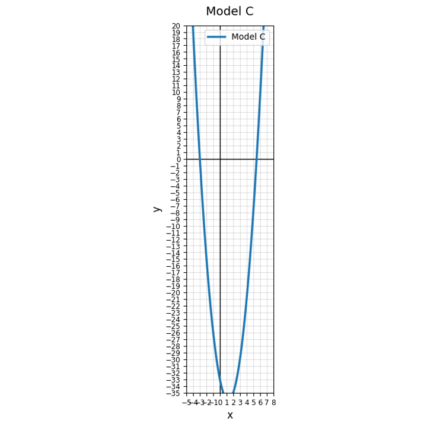
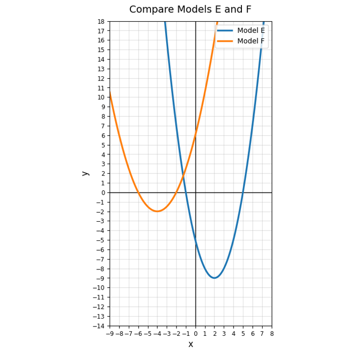

Match each equation to a reasonable first method. Cards are intentionally shuffled.
Solve using any appropriate method. Then explain why your method was efficient.
$$10000x^2-64=0$$
Solve $x^2-10x+21=-4$ using two methods. Which method felt more efficient, and why?
A teammate says, “Always use the Quadratic Formula because it always works.” Defend or revise this statement using at least two example equations.
Calculate the discriminant.
$$x^2+12x+36=0$$
Identify $a$, $b$, and $c$.
$$0.2x^2+3.2x-5=0$$
What problem does the Quadratic Formula solve?
Use Model C. How many real solutions appear reasonable?

Use the Quadratic Formula to solve.
$$3x^2-4x-1=0$$
Without solving completely, determine the number of real solutions.
$$4x^2+4x+5=0$$
Use Models E and F. Choose one model and explain how the graph could agree with a positive, zero, or negative discriminant.

Create one quadratic equation where the Quadratic Formula gives rational solutions and one where it gives irrational solutions. Explain how you know.
State the vertex of $y=(x-7)^2-2$.
Complete the square.
$$y=x^2+18x+20$$
A student says $x^2+2x+1=0$ has no real solutions because the graph only touches the axis. Critique the statement.
Explain how completing the square can be used to derive or understand the Quadratic Formula.